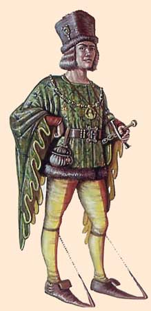
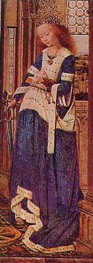

|
Корсет
бургундских мод XIII - XIV веков
|
||
|
 |
Нечто
похожее на корсет носили в XIV веке во времена бургундских
мод (<=>)после
распада Римской Империи. |
 |
| Иллюстрация. Современная энциклопедия Аванта. Мода и стиль. | Святая Екатерина. | |
|
Вопросы
для самопроверки
|
||
| 1. Почему возникла
бургундская мода? 2. Эстетический идеал красоты, какой он? 3. Что представлял корсет времён бургундских мод? |